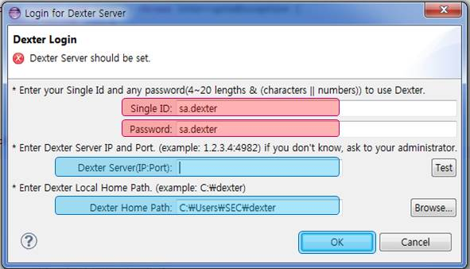
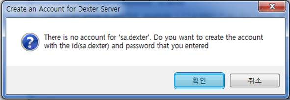

> Account Creation
1. Please execution Dexter.
* You should read the comments carefully as there are Login Operation policies.

* If check for Cration account is required, select OK to create your account now.

2. And you click again the Dexter Login tab after login to server,
you can check ID that is currently on-line status as below.